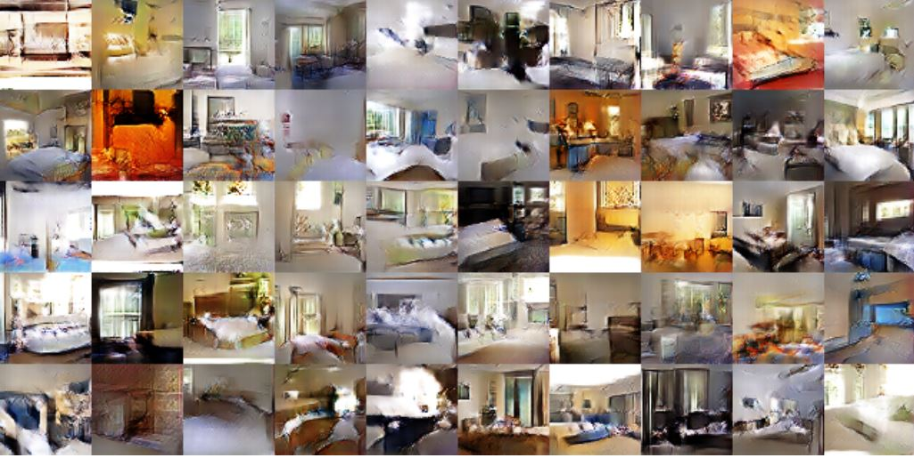
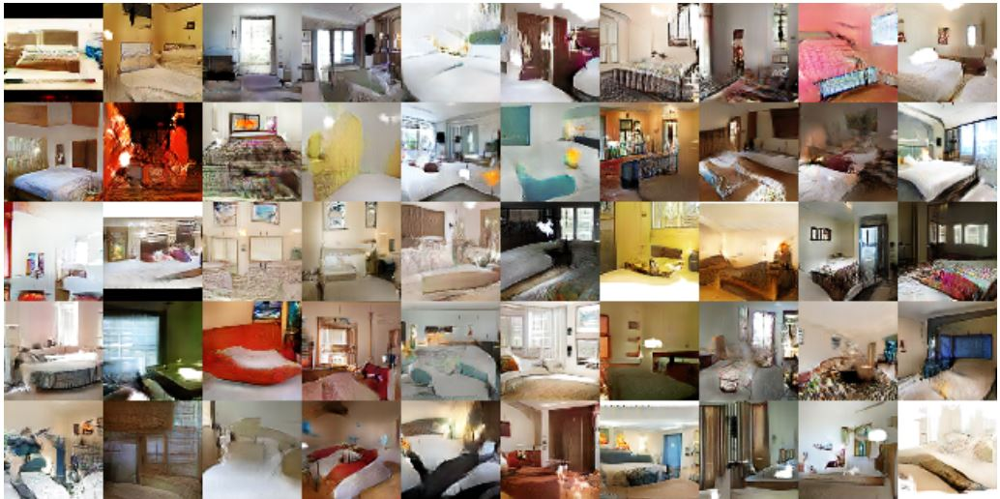
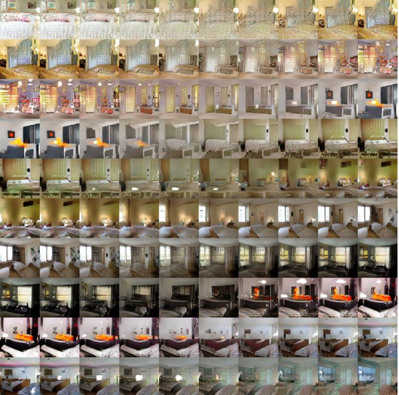
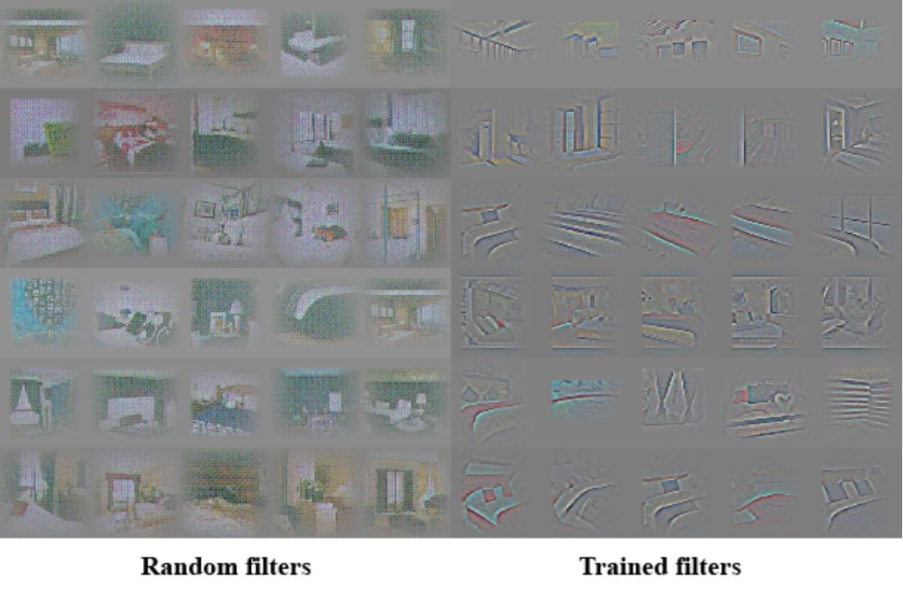
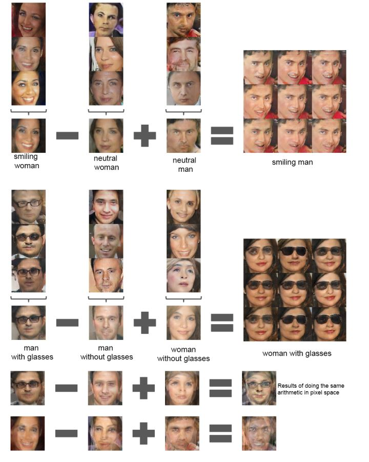

DCGAN
DCGAN
기존의 GAN의 문제점
Low Resolution
기존의 GAN에서는 단순한 fully connected를 사용하였기 때문에 Generator가 High Resoulution한 즉 높은 화질의 이미지를 생성해낼 수 없었습니다. 그래서 MNIST와 같이 단순한 (28,28)사이즈의 이미지 밖에 생성해 낼수 없었습니다.
Memorization
Generator가 정말로 이미지를 만들어 내는 것이 아닌 학습한 데이터를 기억하여(Memorization) 하나를 골라내는 것이 아니냐? 라는 의문점이 있기도 하였습니다.
Unstable Train
학습이 항상 잘 되는것이 아니라, 어떤 때는 진짜같은 이미지를 만들어 내지못하기도 하고, 한가지 이미지만을 계속 만들어내는 등 안정적이지 못한다는 단점이 있었습니다.
Deep Convolutional의 장점
Network를 convolution을 사용하게 되면서 아래와 같은 장점들을 얻을 수 있게 되었다.
- deconvolution을 통한 high resolution한 이미지를 생성할 수 있다.
- filter visualization 통해 어떤 것을 학습하는지 알수 있는 기존의 Black Box라는 문제점을 줄여줄 수 있다.
- 이미지의 특징을 학습하여 다양하고 실제같은 이미지를 학습 할 수 있다.
- 안정적인 학습이 가능합니다.
Model Structure
All Convolution net
- D의 max pooling과 같은 pooling function를 strided convolutoin으로 대체하였다
- G는 spatial upsampling을 적용시켰다
Eliminate Fully Connected Layer
- G의 맨위쪽 Fully Connected layer는 없애고, global average pooling으로 바꿨다.
- D의 flatten된 last convolution layer는 single sigmoid를 output으로 한다.
Batch Normalization
DCGAN에서는 모든 Layer를 Batch Normalization을 사용합니다. D의 input layer와 G의 output layer는 batch norm을 사용하지 않습니다.
Experiment
Train Examples
- epoch(1) 결과

- epoch(5) 결과

위 결과들을 보면 epoch(1)에서는 bedroom이 성공적으로 만들어졌고, 얼핏보면 구조나 object들이 이상한 것을 볼수 있습니다. 하지만 epoch(5)에서는 그런 object의 불안정한 부분을 조금 완화시킨 것을 볼수 있습니다.
Walking on latent space
앞에서 얘기했던 GAN의 문제점인 Memorization은 학습을 할 때 학습의 데이터를 기억해서 generation할 때 그 학습한 데이터를 그대로 만들어내는 것이 아니냐는 의문점이 있었습니다.
그래서 그 해결방법인 Z(noise)를 천천히 변화시키면서 Generation하는 이미지들이 천천히 변하는 것(walking on latent space)을 관찰한다면 만약 generated 된 이미지가 noise를 따라 천천히 변하는 것이 아니라거나(sharp transition), 제대로 generate가 되지 않는다면 그것은 이미지를 순수히 generate하는 것이 아니라 memorization한것이라고 할수 있습니다.

위의 이미지를 보면 noise를 천천히 변화시키며, generated 된 이미지들이 walking on latent space가 되는 것은 볼수 있습니다.
Discriminator Filter Visualizing
Discriminator의 Filter를 학습시키기 전과 학습시킨 후를 비교하였습니다. (Bedroom Dataset)

- Random Filter는 주어진 이미지에 대해 아무런 반응이 없는 반면
- Trained Filter는 Bedroom의 구조나 모형 같은 것에 반응을 하여 activate하는 것을 볼수 있습니다.
Vector Arithmetic

DCGAN 논문에서는 noise Vector간에 연산이 가능하다는 새로운 연구가 있었다. Vector(Smiling Woman) - Vector(Neutral Woman) + Vector(Neutral Man) = Vector(Smiling Man)
이런식으로 {Smile Woman - Neutral Woman} = Smile, Smile + Neutral Man = Smiling Man 이런식으로 미소짓는 남자를 만들어내는 Vector 연산을 했던 것이다.
참고
dcgan 한글 설명 : http://jaejunyoo.blogspot.com/2017/02/deep-convolutional-gan-dcgan-1.html
arxiv 논문 : https://arxiv.org/abs/1511.06434